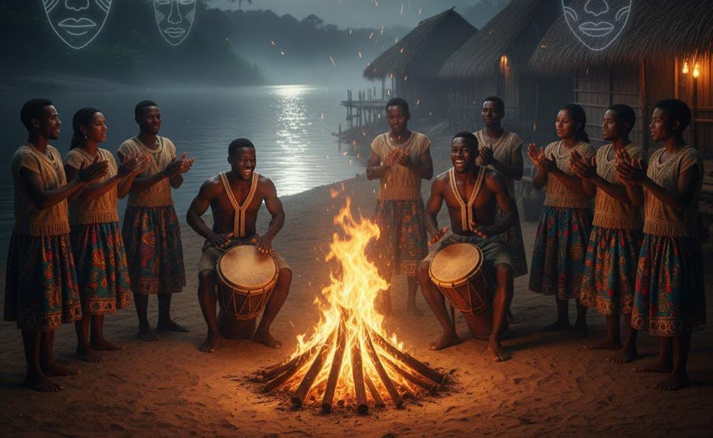

Orígenes indígenas y fundación del territorio
Antes de convertirse en la cuna del Chandé, la zona donde hoy se encuentra San Sebastián de Buenavista estuvo habitada por comunidades indígenas asentadas en la depresión momposina. Estas culturas dejaron huellas en su cerámica, en sus prácticas rituales y en la forma como se relacionaban con el río Magdalena. Con la llegada de los colonizadores y la fundación del antiguo San Sebastián de Melchiquejo en el siglo XVIII, se mezclaron las tradiciones indígenas con la religiosidad católica y las costumbres de los nuevos pobladores, formando el sustrato cultural que más tarde permitiría el surgimiento de ritmos propios de la región.
